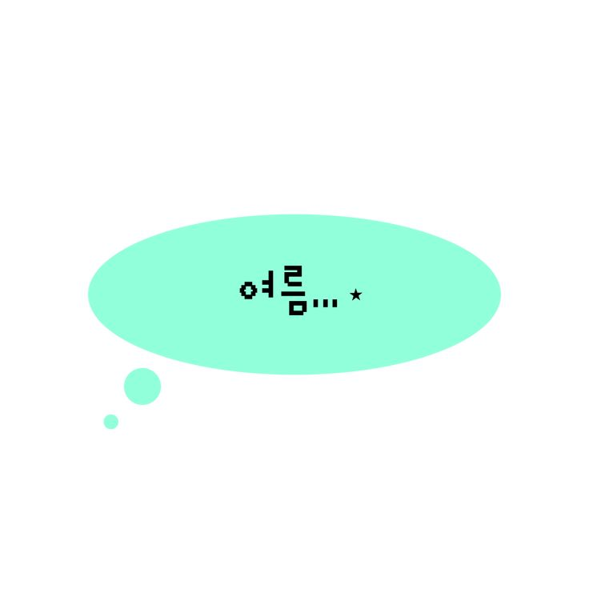
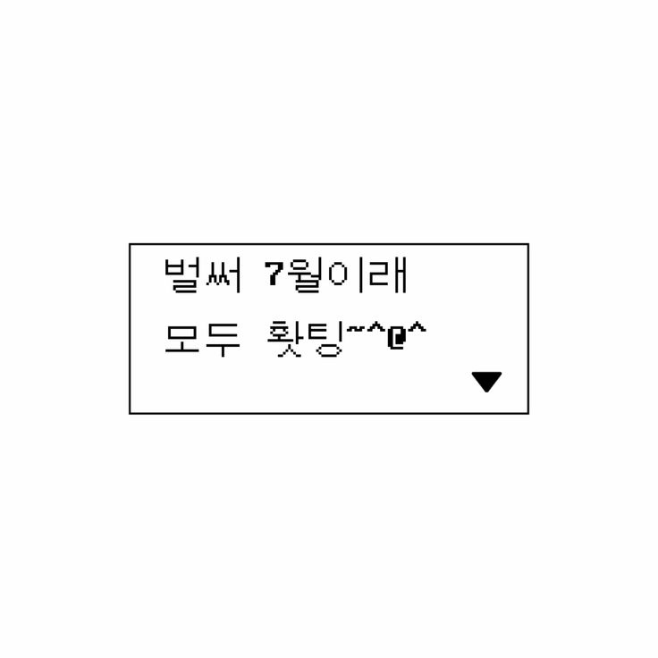
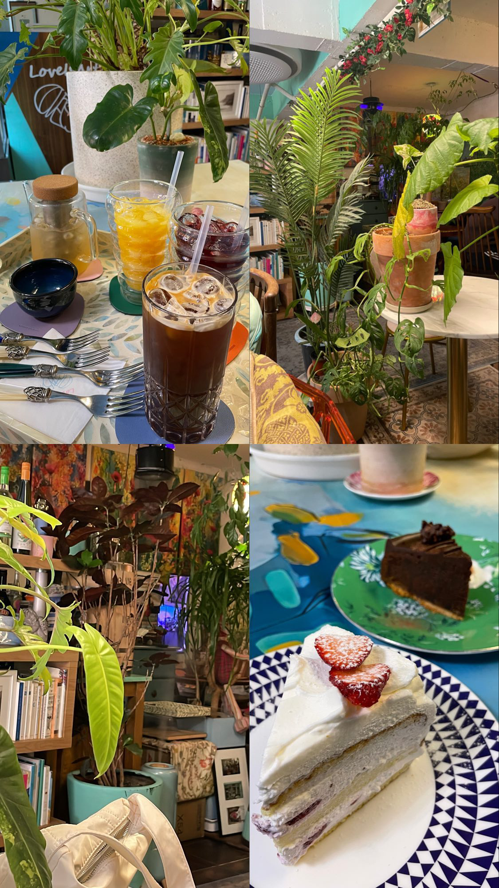
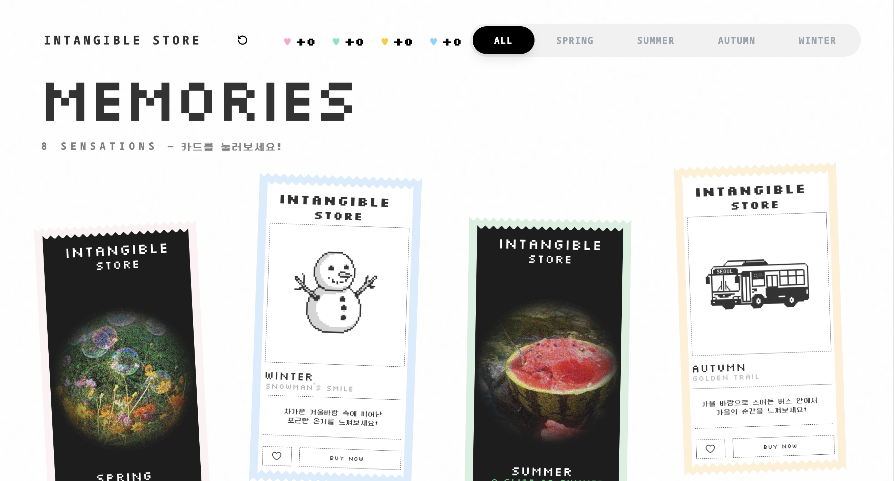
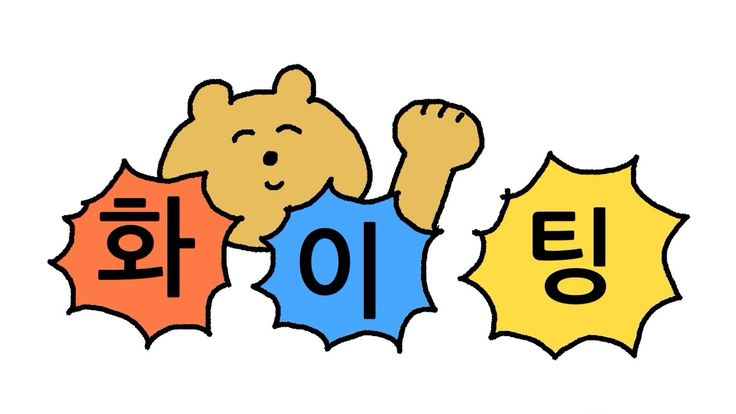

삼수 끝에 미자전으로 입학하게 된 26학번 유하은이라고 합니다! 저는 대학생 신분으로 처음으로 방학을 맞이했는데요...
무더운 여름이라 에어컨을 달고 살고 있습니다 ㅎㅁㅎ 무더위 속에서도 한글꼴연구회와 함께 여름전을 할 수 있어 영광이에요!



홍대에 평소 좋아하는 Love Is Art라는 카페입니다!
풀들이 가득해서 꽤나 싱그러워요 ㅎㅎ
저는 평소 성격이 급하다보니 의식적으로 여유로운 시간을 가지려 노력하는데요! 서울에 다양한 컨셉의 카페를 누비며 커피를 음미하는 것도 좋아하고, 다양한 전시를 보러 다니거나(난해한 현대미술을 이해하는 건 사실 아직도 어렵네요 하하), 사진보다는 눈으로 담는 여행도 꽤나 자주 다니며 좋아합니다! 얼마 전 방학을 맞아 번개로 속초도 다녀왔답니다~!
프로토를 입단하고 처음으로 html, css, js를 배우게 되었는데, 처음 배울 때는 굉장히 생소하고 어려워서... 조금 당황했던 기억이 있네요 하하... 물론 지금도 ai의 도움을 받아 하나씩 차근차근 공부하고 있지만 그때보다는 정....말 조금이지만 발전한 것 같아 다행이에요
얼마전 봄전으로 '무형의 상점'이라는 가상의 감정을 판매하는 상점을 기획했었는데, 평소 말로 다루기 어렵고 추상적인 형태의 것들을 시각적으로 풀어내는 것에 관심이 있었기에 이 주제를 다루게 됐습니다 첫 전시라 조금 밤티.....인 것 같긴 하지만 아디팀의 멋진 피드백과! 프로토 분들의 불타는 열정덕에 잘 끝낼 수 있던 것 같아요~!!

봄전으로 했던 무형의 상점 처음 화면입니다!

앞으로 한글꼴연구회 부원분들과 협업하며 전시를 통해 제 무의식 중에 잠재해있던 생각들을 마구마구 꺼낼 수 있는 기회가 됐으면 좋겠네요! 모두 모두 화이팅입니다~